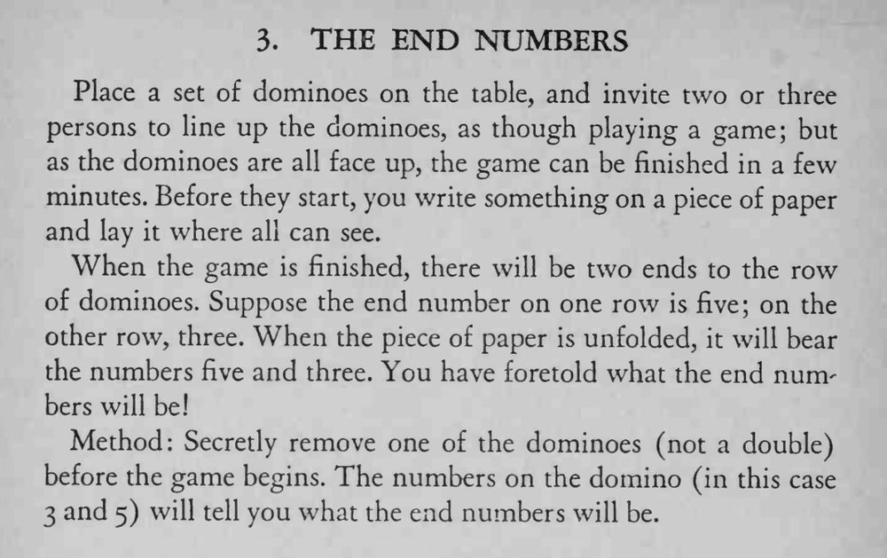

两三个人把多米诺骨牌接龙排成一列，排完时两端的点数，正好和魔术师事先写在纸上的数字一样。
被拿走那张牌的两端数字就是最后两端的数字；拿牌时别让人发现牌少了一张。

Place a set of dominoes on the table, and invite two or three persons to line up the dominoes, as though playing a game; but as the dominoes are all face up, the game can be finished in a few minutes. Before they start, you write something on a piece of paper and lay it where all can see. When the game is finished, there will be two ends to the row of dominoes. Suppose the end number on one row is five; on the other row, three. When the piece of paper is unfolded, it will bear the numbers five and three. You have foretold what the end numbers will be! Method: Secretly remove one of the dominoes (not a double) before the game begins. The numbers on the domino (in this case 3 and 5) will tell you what the end numbers will be.